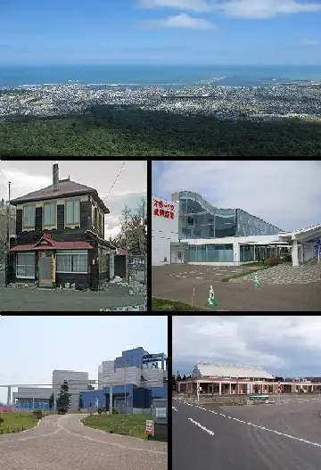
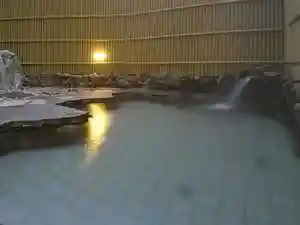
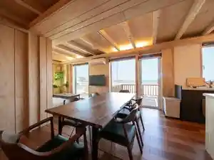
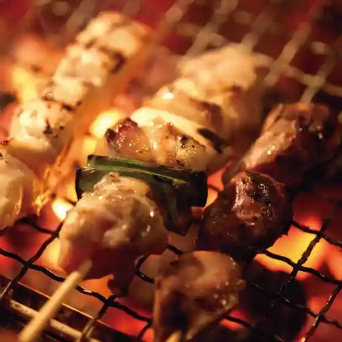
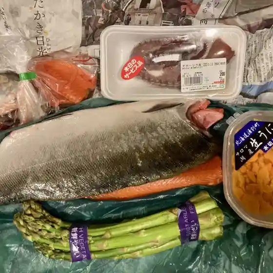
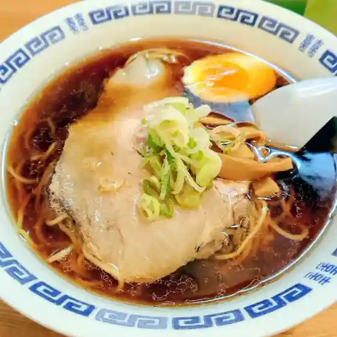
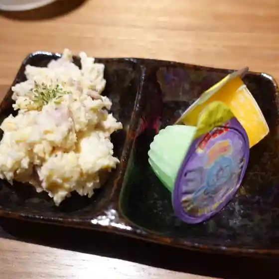
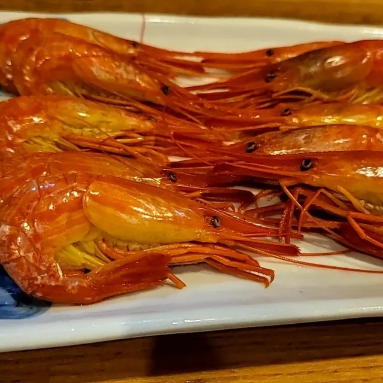
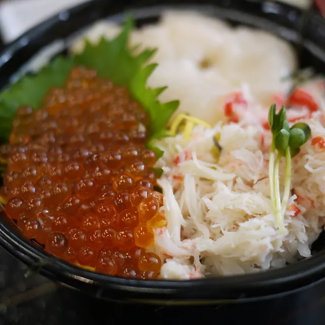

Monbetsu
Monbetsu · Hokkaido
Monbetsu
Highlighted on the Hokkaido map.

Stay
ホテル オホーツクパレス紋別
Hoteru Ohootsukuparesu Monbetsu
紋別セントラルホテル
Monbetsu Sentoraruhoteru
紋別プリンスホテル

Monbetsu Purinsuhoteru
Okhotsk Ocean Villa AL MARE mombetsu

Okhotsk Ocean Villa Al Mare Mombetsu
Dining
白木屋 紋別店

Shirokiya Monbetsu Mise
炭火焼肉 たわら屋
Sumibi Yakiniku Tawara Ya
まるとみ 渡辺水産 直販店

Marutomi Watanabe Suisan Chokuhanten
食堂 亀尾

Shokudou Kameo
ちゃおず

Chaozu
居酒屋いろり

Izakaya Irori
紋別漁師食堂

Monbetsu Ryoushi Shokudou
ラーメン ボス

Raamen Bosu
喜多牧場 ガリンコ店
Kita Bokujou Garinko Mise
紋別セントラルホテル
Monbetsu Sentoraruhoteru
サロン ド ラボ
Saron Do Rabo
チャレンジショップ はらぺこ
Charenjishoppu Harapeko
とあんくる
Toankuru
みるとんはうす
Mirutonhausu
光華
Hikari Hana
Farmer's Break 果穂
Farmer'S Break Kaho
らーめん一歩
Raamen Ippo
カムズ
Kamuzu
焼肉酒庵 仲川
Yakiniku Sake Iori Nakagawa
ラーメン専門 大将
Raamen Senmon Taishou
タウンショップ 栄一夢
Taunshoppu Eiichi Yume
かど
Kado
セイコーマート 紋別港町店
Seikoomaato Monbetsu Minatomachi Mise
ナミサカフェ
Namisakafe